Overview
Reinforcement learning with verifiable rewards (RLVR) improves a language model’s reasoning while remaining susceptible to training collapse. PPO and GRPO often reuse samples from an older policy across multiple gradient steps, using importance ratios and clipping to control the mismatch with the current trainer. Much of the work on instability studies this objective mismatch. Yet across several of our experiments, we observed higher entropy and unstable training with tighter clipping, while training with looser clipping remained stable.
We take a gradient perspective: how does an update change the local token distribution? The gradient naturally divides updates into four regimes: positive peak, positive valley, negative peak, and negative valley. The peak/valley boundary follows from the current distribution, without manually chosen thresholds. This taxonomy explains why tighter lower clipping can remove more entropy-decreasing updates and accelerate collapse. We test the connection directly: masking entropy-increasing updates stabilizes runs prone to high-entropy collapse, while additionally masking entropy-decreasing updates accelerates it. The same taxonomy motivates Winner Advantage Policy Optimization (WAPO), which trains only on positive-advantage rollouts.
We evaluate WAPO on Qwen3-4B, SmolLM3-3B, and Gemma3-4B across four datasets: OTT-QA, HotpotQA, MATH-500, and NuminaMath-LEAN. WAPO remains stable in all tested settings, achieves its strongest gains over tuned baselines on multi-hop QA, and remains competitive on math.
Background
RLVR is a scalable approach to post-training language models, but it remains susceptible to collapse. Even with reliable rewards, useful reasoning can give way to unrelated text or repetitive output.
<think> ))^x28**({}) orderedList
x231(color872426).txt …
OS受 … PEER assembly … ★★★★★ …Task-irrelevant symbols, multilingual fragments, and malformed text.
SmolLM3-3B · Math · step 150<think> </think> Answer: <your answer> 100000000000000000000000000000…
A confident, repetitive pattern replaces a meaningful answer.
Qwen3-4B · Math · step 139Much of the work on this instability starts from an objective mismatch. The ideal reward we want to optimize is the expected reward under the current policy:
GRPO-style training uses responses from an older rollout policy and optimizes the following clipped surrogate:
Here G is the number of responses per prompt, Ti is the response length, and Âi is its group-relative advantage. The token ratio compares the current trainer with the rollout policy: ρit(θ) = πθ(yit | x, yi,<t)πold(yit | x, yi,<t).
Reusing rollout samples while the trainer changes creates a gap between these objectives. Differences between training and inference engines introduce another mismatch. Importance ratios and clipping aim to control the resulting updates. Clipping can suppress gradients from tokens whose probabilities have drifted too far from the rollout policy. Yet we find an unexpected result: discarding more divergent updates can make training unstable.
Tighter clipping makes training unstable.
Consider the lower clipping tolerance, εlow. A smaller value raises the lower ratio bound 1−εlow, cutting off negative-advantage updates sooner when a token’s probability has fallen relative to the rollout policy. If distance from that policy were the whole problem, this stricter rule should help.
On OTT-QA with SmolLM3-3B and DAPO, we saw the reverse. Increasing εlow from 0.2 to 0.9 retained more of those updates and training continued to learn. With the tighter bound, reward fell as entropy rose.
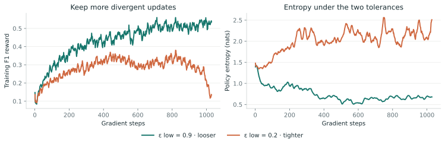
This is not limited to one model or objective. For example, we see stronger clipping can hurt training Qwen3-4B with GRPO on OTT-QA. These examples suggest that policy distance alone does not explain which updates help preserve stability.
More examples of stronger clipping hurting stability
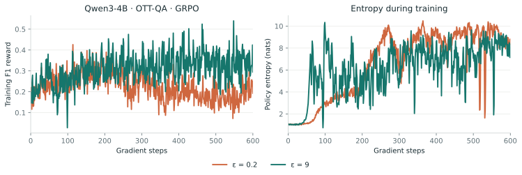
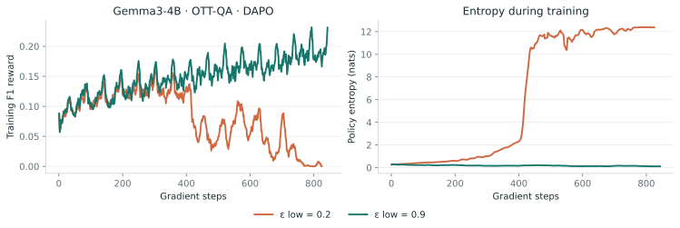
We tuned GRPO with ε ∈ {0.2, 9.0} and DAPO with (εlow, εhigh) ∈ {(0.2, 9.0), (0.9, 9.0)}. Tighter clipping did not consistently improve stability or final performance; in some settings it slowed learning or led to collapse. GSPO, which clips at the sequence level, was comparatively robust with ε = 0.2.
| Loss | Dataset | Models |
|---|---|---|
| GRPO | HotpotQA | Qwen, Gemma |
| GRPO | OTT-QA | Qwen, Smol |
| DAPO | HotpotQA | Qwen |
| DAPO | MATH-500 | Qwen |
| DAPO | OTT-QA | Smol, Gemma |
| Model / dataset | εlow = 0.2 | εlow = 0.9 |
|---|---|---|
| Qwen · OTT-QA | 600 | 30 |
| Gemma · HotpotQA | 160 | 250 |
| Gemma · MATH-500 | 150 | 320 |
Collapse onset is the earliest checkpoint where reward falls by at least 50% within 50 consecutive steps. εhigh = 9 in both DAPO columns.
| Dataset / metric | GRPO ε = 0.2 | GRPO ε = 9 | DAPO (0.2, 0.28) | DAPO (0.2, 9) | DAPO (0.9, 9) |
|---|---|---|---|---|---|
| OTT-QA / F1 | 0.23 | 0.49 | 0.36 | 0.33 | 0.45 |
| HotpotQA / F1 | 0.34 | 0.60 | 0.49 | 0.41 | 0.57 |
| NuminaMath-LEAN / EM | 0.54 | 0.55 | 0.56 | 0.56 | 0.58 |
| MATH-500 / EM | 0.77 | 0.79 | 0.73 | 0.74 | 0.78 |
DAPO column headings give (εlow, εhigh). The table compares reward at a fixed training step across clipping choices. Clipping plot data sources and verified run configurations.
Gradient perspective on stability
Instead of asking “How far are we from the old policy?”, we ask “How does a gradient update alter the local distribution?”. Following observation makes the question concrete: collapse moves toward continuations we would rarely encounter in ordinary task rollouts from the starting model.
How can a gradient update make an unlikely continuation more likely, even when that continuation was never sampled?
We start by writing down how a single token update changes every other token’s probability.
Let p = softmax(z), and let s be the sampled token. A small gradient step on ℓ = −A log ps gives, for an unsampled token i ≠ s:
Scope and derivation of Δpi
This is a first-order result for a direct update in logit space. A neural network’s Jacobian, optimizer, shared parameters, clipping, and repeated updates mediate the realized change. We use it to predict directional contributions, then test those predictions in training.
Derivation
Let p = softmax(z) and ℓs(z) = −A log ps. We take a gradient-descent step of size η > 0, treating the advantage A as fixed. Write δsk = 1 when s = k and zero otherwise.
The loss gradient and resulting logit change are:
For an unsampled token i ≠ s, expand its probability to first order. The softmax Jacobian is:
Substituting the logit update into the Taylor expansion gives:
Expand the sum. Since i ≠ s, the product δikδsk is zero for every k. The remaining terms reduce to:
Substituting back yields the probability-update rule:
“Negative advantage” alone is not enough to say that every tiny alternative gains mass. The exact condition is A[C(p) − ps − pi] > 0. In particular, negative-valley updates redistribute probability toward stronger alternatives, rather than generically raising the tiny tail.
For a very unlikely alternative, pi ≈ 0, its direction is governed by A [C(p) − ps]. A negative update on a high-probability sampled token can lift those tiny alternatives. More surprisingly, a positive update on a low-probability sampled token can lift them too.
This gives us a dynamic threshold, C(p) = ∑i pi². The boundary adapts to the current distribution; it is not a fixed probability cutoff. We call a sampled token a peak when ps ≥ C(p), and a valley when ps < C(p).
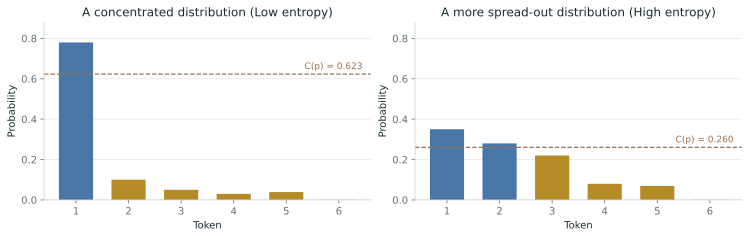
Four kinds of token updates
Crossing peak/valley with the sign of the advantage divides updates into four regimes. Except for pos-peak, each regime risks redirecting probability toward unhelpful alternatives. In our experiments, all three are unstable when trained in isolation. Their effects on entropy provide a qualitative picture of how each regime shapes training dynamics.
Positive peak
Reinforce an already likely token.
Entropy usually ↓Stable alone, but conservativePositive valley
Reward an unlikely continuation.
Entropy ↑High-entropy collapse when trained aloneNegative peak
Suppress a likely token; lift alternatives.
Entropy usually ↑High-entropy collapse when trained aloneNegative valley
Suppress an unlikely continuation.
Entropy ↓Low-entropy collapse when trained aloneFor entropy H(p) = −∑i pi log pi, the same calculation gives:
The bracket is non-positive for valleys: positive-valley updates increase entropy, and negative-valley updates decrease it. Term 1 is zero in expectation over the sampled token, while for peak tokens term 2 is positive by definition. Thus, positive-peak updates usually decrease entropy, while negative-peak updates tend to increase it.
Proof: connecting entropy direction to peaks and valleys
Let B(ps) denote the bracket in the entropy equation. Since ΔH = −η A B(ps) + O(η²), we need the sign of B(ps) to determine the first-order entropy direction.
Hold the distribution p fixed and define:
Valleys: bound the bracket at both ends
Because p is fixed, M(p), H(p), and C(p) are constants as x varies. The second derivative is B″(x) = 1/x > 0 for x > 0, so B is convex. For 0 ≤ x ≤ C(p), convexity gives:
Both endpoint values are non-positive. At zero:
The covariance is non-positive because −log pi decreases as pi increases. At the other endpoint, define the probability distribution qi = pi²/C(p). Then:
The last inequality follows from non-negativity of KL divergence. The convexity bound therefore gives B(x) ≤ 0 throughout [0, C(p)]. In particular, every valley has B(ps) ≤ 0. Multiplying by −η A gives a non-negative first-order entropy contribution for positive valleys and a non-positive one for negative valleys.
Maximum-probability peaks: bound each weighted contribution
Now let ps = maxi pi. This token is a peak because C(p) = ∑i pi² ≤ ps∑i pi = ps. Define:
Rewrite the bracket using these weights:
Since pi ≤ ps, we have −log pi ≥ −log ps. Every weight is non-negative, so:
Thus a positive update on a maximum-probability peak has a non-positive first-order entropy contribution; a negative update has a non-negative one.
Why the statement for other peaks says “usually”
For any peak, term 2 is non-negative. Term 1 averages to zero when the sampled token is drawn from the full distribution:
This average does not fix the sign for every sampled peak. For example, p = (0.14, 0.46, 0.40) and ps = 0.40 give C(p) = 0.3912, so the token is a peak, yet B(ps) ≈ −0.0083. A positive update can therefore increase entropy. The valley result and the maximum-probability peak result are sign guarantees for the first-order term; the direction for other peaks is the empirical tendency examined below.
How often do peaks break the entropy prediction?
| Base model | Peak tokens | Opposite direction | Rate |
|---|---|---|---|
| Qwen3-4B | 25,976 | 37 | 0.14% |
| SmolLM3-3B | 8,870 | 45 | 0.50% |
These step-0 measurements are aggregated across advantage signs. They support “usually,” not a universal statement about peaks. For example, p = (0.14, 0.46, 0.40) has C(p) ≈ 0.391. Sampling the 0.40 token makes it a peak, yet a positive update can increase entropy.
Try the update yourselfChoose a token and an advantage sign
Same rule. Different distributions.
Select a bar to choose the sampled token. Blue = peak; ochre = valley.
A toy vocabulary, with a direct logit step η = 0.1. Outlines show the distribution after the step.
Then we trained on each regime in isolation.
On SmolLM3 and NuminaMath-LEAN, positive peaks learned stably but plateaued. Positive valleys and negative peaks drove entropy upward and failed. Negative valleys produced the other failure: entropy fell, early gains disappeared, and generations became concentrated and repetitive.
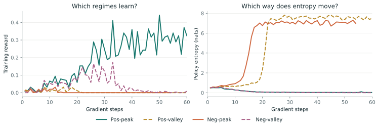
So the three unstable regimes share a risk of redirecting probability toward unhelpful alternatives, but they do not fail in the same way. Entropy direction separates diffuse collapse from overconfident collapse.
The single-regime comparison on Qwen
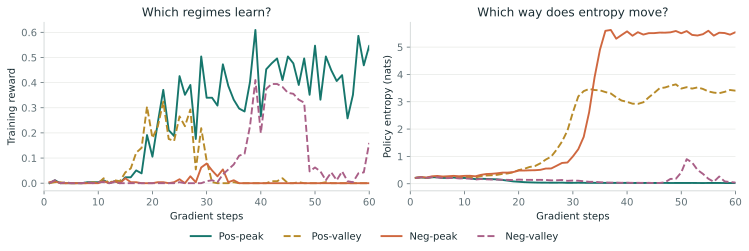
Return to the clipping puzzle.
The lower clipping bound is 1 − εlow. It cuts off negative-advantage updates whose probability ratio is too small. Lower-probability tokens tend to have a wider spread of ratios, so a ratio threshold disproportionately affects valleys—an effect documented in Rethinking the Trust Region in LLM Reinforcement Learning.
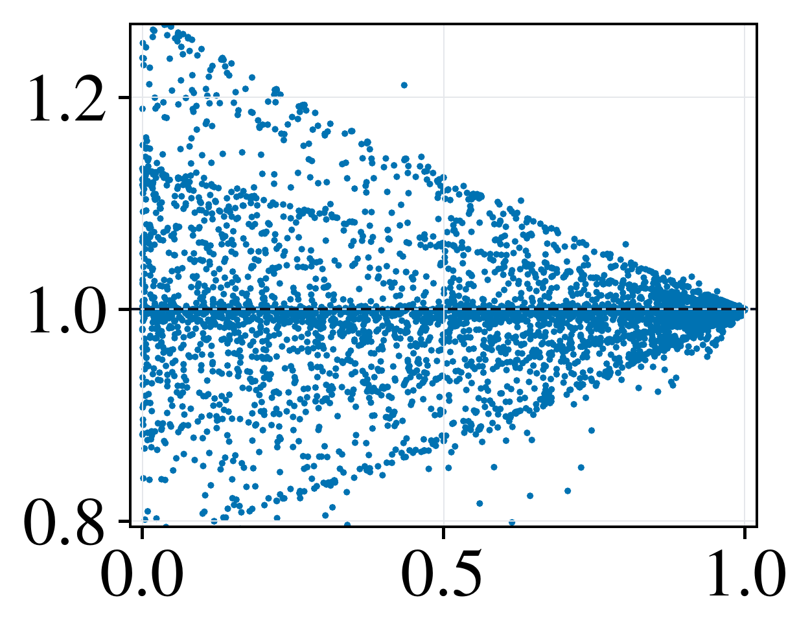
A tighter lower bound removes more negative-valley updates, which decrease entropy. A looser bound retains more of them to balance entropy-increasing updates. This is why allowing more divergence can improve stability.
Negative-valley updates can also collapse training when used alone, this time at low entropy. Their effect depends on the mix of updates. How far a token has drifted does not tell us where its update pushes probability.
We tested the entropy direction directly.
In runs that collapse as entropy rises, we directly masked token updates with a large predicted entropy increase, ΔH > τ+. This kept training stable. When we also masked entropy-decreasing updates with ΔH < τ−, entropy rose sooner and collapse accelerated.
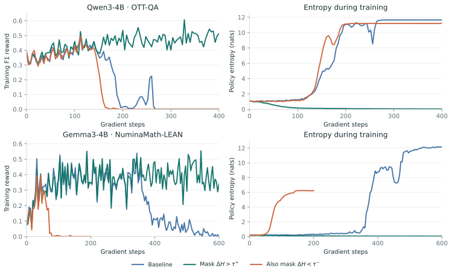
These filters add entropy-change thresholds to tune. Next, we examine a minimal alternative with no additional selection hyperparameters: training only on positive-advantage rollouts. In our experiments, it preserves stability while retaining useful performance.
Positive-only training is stable.
The quadrant experiments suggest a simple combination to try: keep both kinds of positive updates. This removes negative valleys, which can cause low-entropy failure, and negative peaks, which can cause high-entropy failure. What remains still has two competing effects: positive valleys broaden the distribution; positive peaks sharpen it.
Peaks are sampled much more often than valleys. That gives positive-only training a natural counterweight to the entropy-increasing push from successful but unlikely tokens. It retains a route to rewarded exploration without relying on negative-advantage updates.
Distribution of peaks and valleys during actual training
| Model | Recorded tokens | Peaks | Valleys |
|---|---|---|---|
| SmolLM3 | 817,574 | 85.85% | 14.15% |
| Qwen3 | 10,000 | 92.53% | 7.47% |
| Gemma3 | 10,000 | 95.18% | 4.82% |
We tested the four choices that combine pairs of regimes: positive only, negative only, peak only, and valley only. Positive and valley masks were comparatively stable; negative and peak masks were unstable. Positive-only training generally learned better than valley-only training.
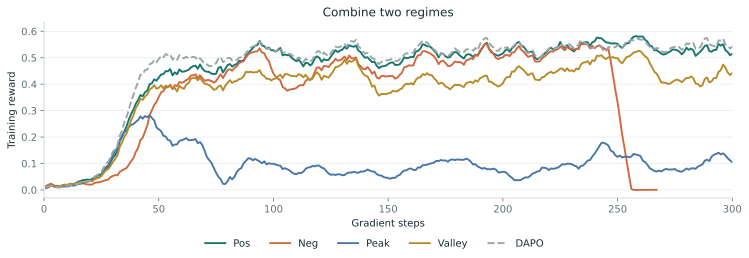
The same comparison on Qwen
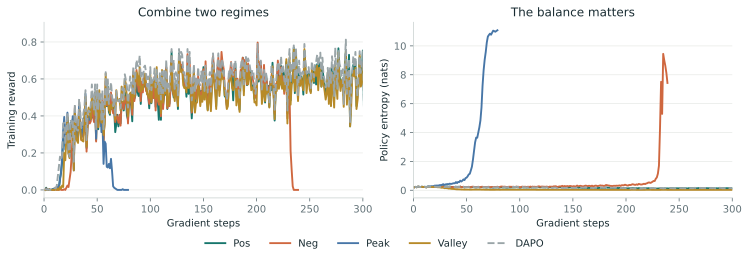
Why not train on valleys?Token frequency and context entropy
Valley tokens tend to occur where the model is less certain. That makes valley-only training qualitatively reminiscent of the 80/20 high-entropy token approach, which focuses learning on uncertain decision points. But the filters differ: entropy describes the whole context distribution, while peak/valley also depends on which token was sampled.
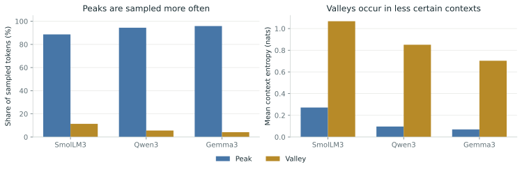
We do not yet have a theory for why positive-only training outperforms valley-only training. A plausible explanation is coverage: valleys supply far fewer sampled tokens, and ratio-based clipping can remove more of them.
Learn from winners.
Keep the online learning loop.
The analysis gives a reason to revisit positive-only training. We call the resulting objective Winner Advantage Policy Optimization, or WAPO. Sample a group of completions, compute group mean-centered advantages, and let only above-baseline completions contribute policy-gradient loss.
Center the rewardsAi = ri − r̄No reward standard deviation in the denominator.
Keep positive advantagesAi+ = max(Ai, 0)For continuous rewards, a winner means above the group mean.
Use a fixed normalization1 / (G · Tmax)Normalize by group size and the fixed maximum sequence length.
We retain online rollouts, token-level importance ratios, and clipping. For response length Ti and ratio ρit = πθ / πold at the sampled token, the objective is:
What does that normalization buy us?
In an idealized binary-reward setting, let qx be the probability of solving prompt x. A successful response has positive advantage 1 − r̄. With group-size normalization and r̄ ≈ qx, the expected update is proportional to:
We still ascend the probability of success, but the multiplier decreases as a prompt becomes easy. Harder prompts receive a larger relative weight.
Alternative normalizations and controlled ablationsWhy group size, why no standard deviation?
Normalizing by the number of winners produces the factor (1−qx)/qx, which can amplify rare successes sharply. Standard-deviation normalization changes the binary-reward factor to √((1−qx)/qx). We use the bounded 1−qx version. The fixed Tmax contributes a constant scale.
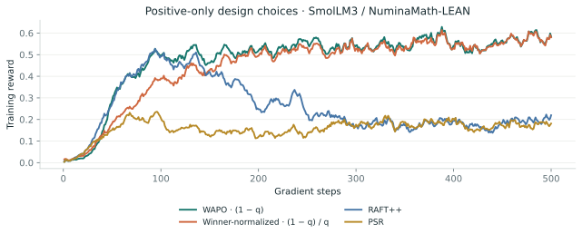
| Setting | Reward |
|---|---|
| GRPO, ε = 0.2 | 0.26 |
| GRPO, ε = 9 | 0.32 |
| GRPO, ε = 9, mean centering without std | 0.32 |
| GRPO, ε = 9, negative masking | 0.39 |
| GRPO, ε = 9, group normalization | 0.03 (collapse) |
| Full WAPO, ε = 9 | 0.48 |
The clearest gains are where training is fragile.
We compared WAPO with GRPO, DAPO, and GSPO across Qwen3-4B, SmolLM3-3B, and Gemma3-4B. The tasks span single-turn mathematics and multi-turn question answering with search: MATH-500, NuminaMath-LEAN, OTT-QA, and HotpotQA.
We swept clipping settings for the baselines: GRPO used ε = 9, DAPO used εlow = 0.9 and εhigh = 9, and GSPO used ε = 0.2. WAPO used the same ε = 9 setting across these benchmarks.
WAPO stayed stable in the reported benchmark runs. Its largest gains were on multi-hop QA. On Qwen, best-checkpoint average@32 exact match rose from the next-best baseline’s 27.57% to 37.44% on OTT-QA, and from 41.30% to 45.84% on HotpotQA. Math results were competitive, but WAPO was not consistently the strongest method.
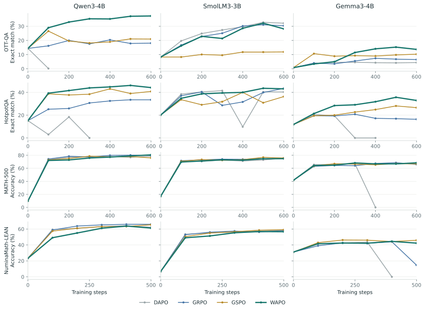
In-distribution scores
| Dataset | Model | DAPO | GRPO | GSPO | WAPO |
|---|---|---|---|---|---|
| OTT-QA | Qwen | N/A × | 20.70 | 27.57 | 37.44 |
| Smol | 32.63 | 31.27 | 11.76 | 29.59 | |
| Gemma | 4.67 | 6.62 | 10.50 | 13.67 | |
| HotpotQA | Qwen | 16.56 × | 30.69 | 41.30 | 45.84 |
| Smol | 42.01 × | 42.44 | 38.66 | 43.62 | |
| Gemma | 19.72 × | 21.09 | 24.36 | 34.91 | |
| MATH-500 | Qwen | 78.01 | 79.51 | 78.62 | 78.90 |
| Smol | 75.66 | 75.01 | 75.88 | 74.86 | |
| Gemma | 66.50 × | 67.24 | 66.88 | 66.90 | |
| NuminaMath | Qwen | 63.02 | 64.83 | 65.17 | 61.99 |
| Smol | 58.79 | 58.02 | 58.40 | 57.63 | |
| Gemma | 42.65 × | 43.39 × | 44.27 | 42.78 |
× marks a run whose training reward fell near zero; a score can precede later collapse. N/A is failure within 100 steps. Best values in each row are emphasized. These annotations use a near-zero reward convention; the separate clipping-onset analysis uses the explicit 50%-drop criterion.
Does winner-only learning preserve exploration?
Removing negative updates could have made the policy too narrow. The pass@k curves suggest that useful diversity survives: WAPO was strong across the QA sampling budgets and competitive on math. On Smol / NuminaMath-LEAN, WAPO reached 81.02% pass@16, alongside GSPO’s 81.0%.
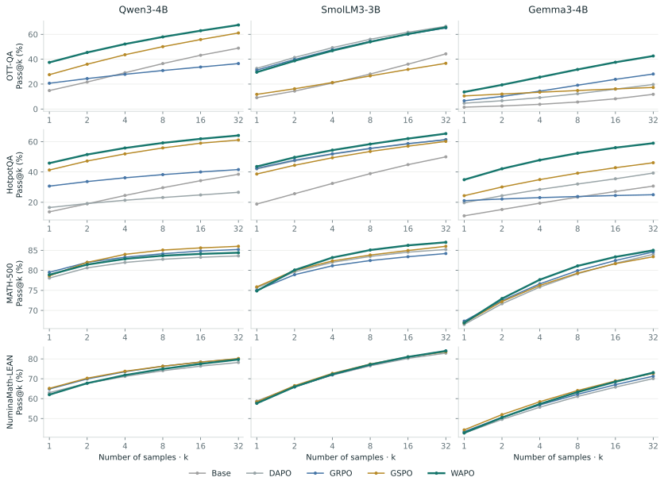
Pass@k measures the chance of at least one correct answer among k samples. It is evidence about useful sampling diversity, not a direct measure of all forms of exploration.
What transfers beyond the training task?
HotpotQA-trained WAPO checkpoints transferred best to 2Wiki across all three model families. NuminaMath-to-AIME’25 transfer was mixed: WAPO was weaker at low sampling budgets in several settings, and became more competitive at higher k, especially on Smol. The evidence supports a stability advantage, not universal benchmark dominance.
| Method | Qwen | Smol | Gemma |
|---|---|---|---|
| DAPO | 13.3 | 30.3 | 22.0 |
| GRPO | 26.6 | 28.7 | 23.3 |
| GSPO | 29.7 | 29.8 | 24.4 |
| WAPO | 34.2 | 31.4 | 25.6 |
| Method | Qwen | Smol | Gemma |
|---|---|---|---|
| DAPO | 39.06 | 27.18 | 13.75 |
| GRPO | 45.10 | 25.93 | 13.54 |
| GSPO | 42.08 | 26.04 | 14.27 |
| WAPO | 38.43 | 26.77 | 12.71 |
AIME’25 across sampling budgets
| Model | Method | k = 1 | 2 | 4 | 8 | 16 | 32 |
|---|---|---|---|---|---|---|---|
| Qwen3-4B | GRPO | 45.1 | 54.9 | 61.8 | 65.9 | 68.4 | 70.0 |
| Qwen3-4B | DAPO | 39.1 | 47.5 | 55.2 | 62.0 | 69.7 | 80.0 |
| Qwen3-4B | GSPO | 42.1 | 51.9 | 60.6 | 66.7 | 71.3 | 76.7 |
| Qwen3-4B | WAPO | 36.4 | 45.1 | 54.3 | 63.8 | 71.5 | 76.7 |
| SmolLM3-3B | GRPO | 25.9 | 31.5 | 38.2 | 45.8 | 53.0 | 60.0 |
| SmolLM3-3B | DAPO | 27.2 | 33.4 | 40.5 | 47.9 | 53.9 | 56.7 |
| SmolLM3-3B | GSPO | 26.0 | 32.6 | 40.9 | 50.2 | 59.1 | 66.7 |
| SmolLM3-3B | WAPO | 25.9 | 33.5 | 42.9 | 53.5 | 61.7 | 66.7 |
| Gemma3-4B | GRPO | 13.5 | 16.6 | 20.3 | 24.4 | 28.9 | 33.3 |
| Gemma3-4B | DAPO | 13.8 | 17.1 | 20.5 | 23.5 | 26.3 | 30.0 |
| Gemma3-4B | GSPO | 14.3 | 17.6 | 21.0 | 24.3 | 27.4 | 30.0 |
| Gemma3-4B | WAPO | 12.4 | 15.9 | 19.6 | 23.4 | 25.5 | 30.0 |
WHERE THIS LEAVES US
Stability depends on which gradients we keep.
Positive-only learning is a simple way to retain rewarded exploration while removing two distinct routes to collapse.
Stable training is one part of the goal.
Positive-only updates work well in our multi-turn QA experiments, but trail the strongest baselines in several math settings. We do not yet understand this difference. Tool use, reward structure, response length, and the SFT cold start may all matter; the current experiments do not isolate their contributions. Understanding when useful negative-advantage signal should be retained is another open question.
A closer look at the main concerns.
These questions came up during review. Each answer includes the additional control or clarification, along with what remains unresolved.
Does a local gradient calculation describe a full training run?Directional predictions and intervention tests
The calculation describes a direct update in logit space. A model’s Jacobian, optimizer, clipping, and repeated updates mediate the realized change, so we test directional predictions in the actual training pipeline.
On OTT-QA with SmolLM3, keeping all regimes increased entropy from 1.40 to 1.80 by step 150. Removing positive valleys lowered it to 0.099; removing negative peaks lowered it to 0.054. Each intervention reversed the direction while the other regimes remained active.
Clipping interventions gave a related check. At step 500, Smol / OTT-QA entropy was 0.71 with (εlow, εhigh) = (0.9, 9), 2.0 with (0.2, 9), and 1.0 with (0.2, 0.28). Removing more negative valleys increased entropy; additionally restricting positive valleys reduced it. On HotpotQA the corresponding values were 0.28, 2.2, and 1.3.
Does the same separation appear with full fine-tuning and on-policy updates?A control beyond LoRA
A full-parameter, on-policy control reproduced the entropy separation: negative peaks and positive valleys produced high-entropy failure; negative valleys produced a low-entropy regime; positive peaks learned at low entropy. Values below are training reward / entropy after 50 steps.
| Update regime | Full FT, on-policy | LoRA comparison |
|---|---|---|
| Positive peak | 0.23 / 0.012 | 0.30 / 0.035 |
| Negative peak | 0.00024 / 7.9 | 0 / 7.0 |
| Positive valley | 0.00024 / 7.3 | 0 / 7.5 |
| Negative valley | 0.00078 / 0.016 | 0.0057 / 0.010 |
The LoRA comparison uses repeated off-policy updates. Absolute magnitudes differ, so the comparison supports the qualitative directions rather than an exact match between parameterizations.
Could stability just come from a smaller effective learning rate?A larger WAPO step and smaller baseline steps
On Qwen / OTT-QA, we raised WAPO’s learning rate from 10−5 to 2×10−5 and reduced GRPO and DAPO to 5×10−6. DAPO still collapsed. GRPO approached a similar plateau with more optimization steps, while WAPO remained stable at the larger rate.
This suggests that learning-rate scaling alone does not explain the difference.
How much training signal does the positive mask discard?Prompt groups and completions are different counts
A group has no positive centered advantage exactly when all rewards are equal. Such groups are already inactive under mean-centered GRPO. WAPO retains the same gradient-active prompt groups and masks non-positive completions within them.
For Smol / NuminaMath-LEAN, approximately 74% of sampled groups had zero binary-reward variance. At step 500, about 40% of completions within active groups were masked. On OTT-QA, approximately 26% of groups had zero reward variance, and about 47% of completions within active groups were masked at step 500.
Must every negative-advantage update be removed?Useful negative signal remains an open direction
No. A failed completion can contain useful steps, and the taxonomy does not imply that all negative updates are harmful when combined with other updates. A sequence-level reward does not tell us which of those steps to keep. Positive masking is a simple intervention, not the only possible use of the gradient analysis.
An initial Qwen / OTT-QA experiment weighted positive and negative terms by 0.7 and 0.3. It improved F1 by 0.89 points and exact match by 1.66 points over WAPO. Finer weighting of negative signal is worth studying further.
How does this differ from winner-only SFT, PSR, or RAFT++?Online policy gradients, ratios, and normalization
WAPO continues to sample online and uses clipped importance ratios and group mean-centered advantages. With continuous rewards, a winner is an above-group-mean completion, not necessarily a perfectly correct answer.
PSR does not use the same clipped group-relative objective. RAFT++ uses per-sequence normalization without the same group-centered advantages; short successful responses can therefore receive disproportionate weight. The normalization comparison shows these positive-only alternatives on the same Smol / NuminaMath-LEAN task. It does not settle every possible comparison with rejection fine-tuning or reward-weighted regression.
What happens when the verifier makes mistakes?A synthetic reward-noise check
In one test, 10% of positive and 10% of negative rewards were independently flipped. WAPO initially learned more slowly. At step 200, the reported evaluation reward was 51.6 for noisy WAPO and 51.6 for noisy GRPO, compared with 55.0 and 56.0 for their clean counterparts.
False positives can reinforce incorrect behavior, while false negatives remove useful signal. This one corruption model suggests comparable robustness in that test; it does not establish robustness to systematic verifier errors or reward shortcuts.
How repeatable is collapse across random seeds?A specific three-seed check
We repeated the Qwen3-4B / OTT-QA DAPO experiment with three seeds: 42, 43, and 44. All three runs collapsed, with onset between steps 25 and 75. Mean peak-to-final F1 fell from 27.67 ± 1 points to zero, while entropy increased by 10 ± 1.
For this analysis, collapse starts at the earliest checkpoint where reward falls by at least 50% within 50 consecutive steps. These repeats support this failure case; the full benchmark matrix does not have equivalent multi-seed uncertainty estimates.
Are the QA gains explained by the SFT cold start?A useful control, with remaining task differences
The QA cold start teaches search-tool formatting; the initial math setup uses base models. To examine this difference, we also fine-tuned all three models on math completions before 500 RL steps on NuminaMath-LEAN. The following are reported best-checkpoint exact-match scores across the tested settings:
| Setting | Qwen | Smol | Gemma |
|---|---|---|---|
| WAPO after SFT | 55.6 | 52.9 | 62.3 |
| GRPO after SFT | 46.0 | 56.0 | 65.0 |
| DAPO after SFT | 47.0 | 57.2 | 64.9 |
| Best method without SFT | 65.2 | 58.8 | 44.3 |
Some models, especially Gemma, benefited from SFT; others did not. WAPO remained stable, but was not always most accurate. This weakens an SFT-only explanation and leaves the difference between multi-turn QA and math as an open question. Scores from runs that collapsed were taken before collapse.
Does positive-only learning reduce useful exploration?Pass@k and task-dependent accuracy
The pass@k results show that useful sampling diversity survives: WAPO is strong on QA and competitive at larger sampling budgets in several math settings. It is not consistently best at low k or on math accuracy.